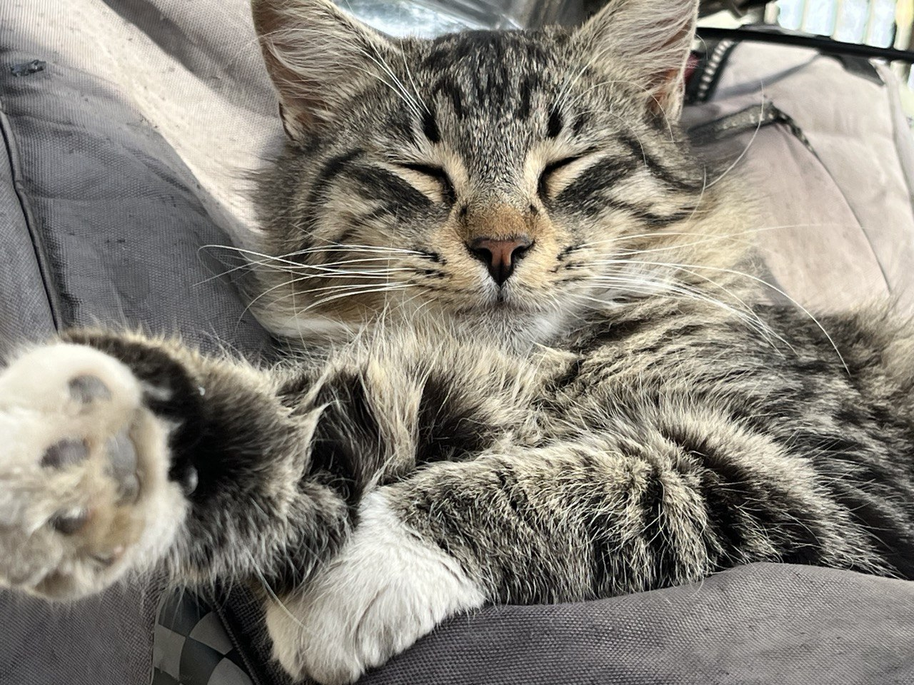

Gezmeyi çok severim.Yeni kültürleri keşfetmek ve yeni insanlarla tanışmak daima ilgimi çekmiştir.Antartika en çok gitmek istediğim yerlerden birisidir. Okyanusun buzullarla oluşturduğu uyumlu tabloyu görmek ve soğuğu iliklerime kadar hissetmek isterim.Çok nadir bir hava olayı olan kutup ışıkları sadece dünyamızın kuzey kısımlarında görülebiliyor. Buraya gitmek istememin büyük sebeplerinden birisi.Kutup Işıkları Kuzey ve Güney kutup bölgelerinde gökyüzünde görülen, yeryüzünün manyetik alanı ile Güneş'ten gelen yüklü parçacıkların etkileşimi sonucu ortaya çıkan doğal ışımalardır.Merakınızı cezbettiyse "Kutup Işıkları" hakkında daha fazla bilgi alabilirsiniz. Fotoğraflarını inceleyebilirsiniz.
Yan tarafta gördüğünüz fotoğrafı ben çektim.Fotoğraf çekmeyi severim,gezdiğim yerleri fotoğraflayınca sanki orada bir hatıra bırakmışım gibi oluyor daha sonradan dönüp baktığımda eski zamanları hatırlıyorum ve mutlu oluyorum. Bu fotoğrafta tatlı uykusunda çok şirin duran bir kedi var. Gördüğümde bu anı ölümsüzleştirmek istedim. Kediler çok uysal,şirin hayvanlar. En azından bizim dönemimizde öyle.
Bayağı eski zamanlarda nesli tükenmiş bir kedi olan Smilodon 2.5 milyon ila 11.700 yıl önce Kuzey ve Güney Amerika'nın ormanlarında yaşadı. Kedinin boyutu, türe bağlı olarak değişiyordu. Boyutları ne olursa olsun, bu büyük kediler tek bir tanımlayıcı özelliği paylaştılar: köpek dişleri. Çenelerinin yanına yerleştirilmiş bu keskin dişler, kedinin yüzünün her iki yanında tehditkar bir şekilde asılıydı. Avlarını öldürebilmek için ağızlarını 90 dereceden fazla açmaları gerekiyordu.
{kind=link}